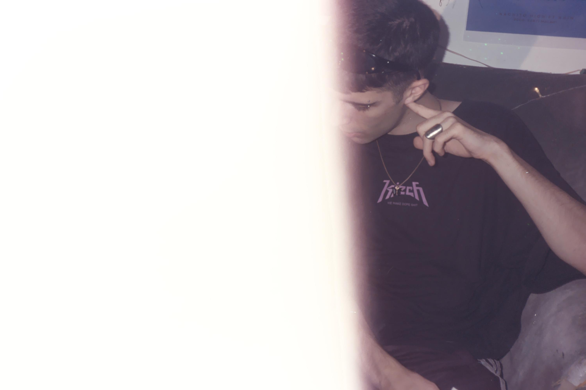

nachitohigh
nachitohigh es un artista urbano argentino que busca desde un lugar sensible comunicar con su música distintas emociones que van desde la nostalgia hasta una diversión despreocupada y juvenil. En sus shows, busca generar un ambiente relajado y amistoso. Su set presenta distintas variantes desde live set con pista, live looping con instrumentos en vivo y full band. Además, sus presentaciones cuentan con momentos de acting que ayudan a construir la narrativa del show.

barnett
Franco Mazar, siendo hijo de músicxs, siempre estuvo e contacto con los instrumentos. En 2020 comenzó su carrera como productor y lanzó el proyecto Barnett, influenciado por el pop, trap y música electrónica. En 2021 lanzó su primer sencillo "Emotiv :(" inaugurando un sonido sensible y sintético. Luego, exploró estilos más oscuros con canciones como "Paciencia" y "Fantasía", pasando también a matices irónicos y despreocupados en "Kamikaze".
